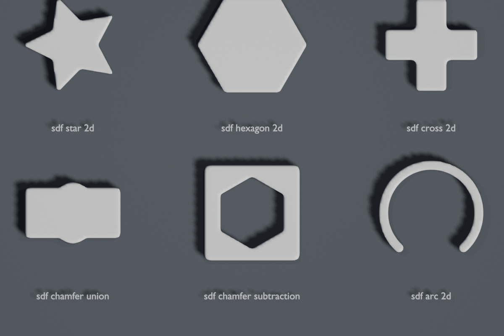
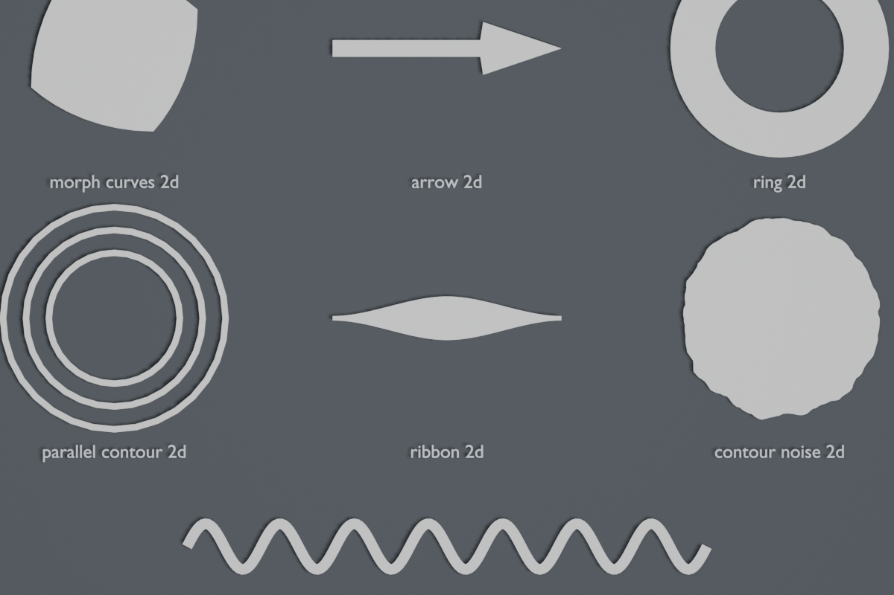
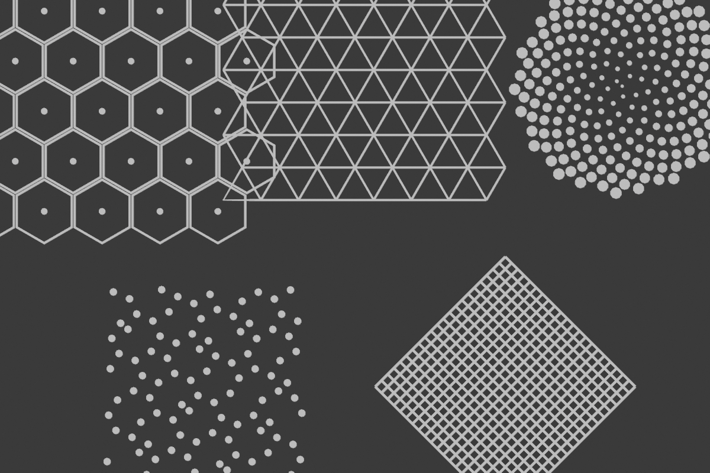
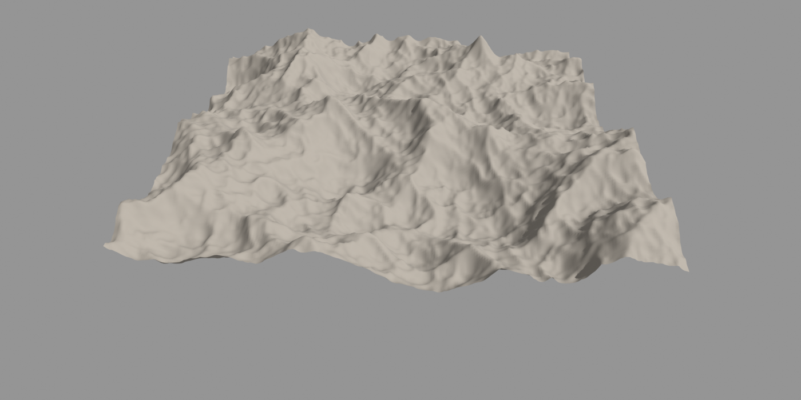
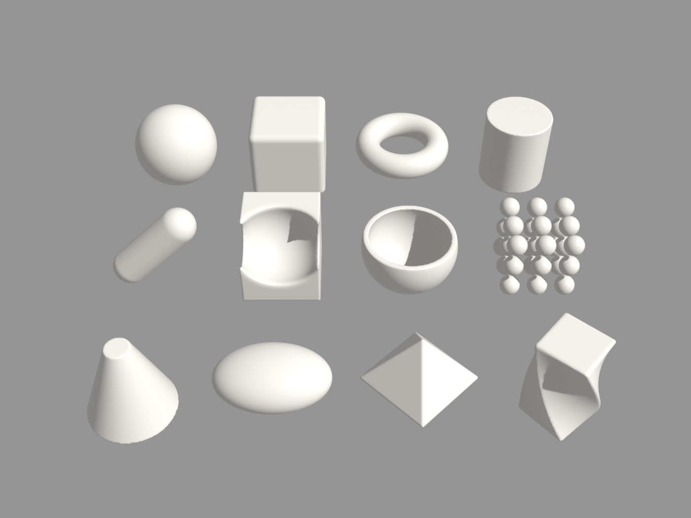

Declarative text format for procedural node graphs. Writes and reads back node trees as typed functions across Python, Rust (wasm32), and Blender.
use curves2d (arrow_2d, ribbon_2d, ring_2d, wave_curve_2d)
use math (sine01, steps)
use patterns2d (hexagonal_grid_2d)
use sdf2d (sdf_chamfer_subtraction, sdf_chamfer_union, sdf_polar_repeat_2d, sdf_ring_2d, sdf_rounded_box_2d, sdf_star_2d)
geometry graph "chrono hud"(phase: Float = 0.0 in 0.0..1.0) -> Geometry {
tau = phase * 6.283185
hex = hexagonal_grid_2d(columns: 11, rows: 11, radius: 0.26, margin: 0.14).mesh
base = hex |> SetPosition(offset: CombineXYZ(z: sine01(phase * 2.0 - length(Position()) * 0.55) * 0.08 - 0.28))
|> ExtrudeMesh(offset_scale: 0.05) |> SetMaterial(material: "DarkSlate")
rotor = hud_rotor(phase) // 6-tooth chamfered SDF escapement stepped by math.steps()
osc = wave_curve_2d(CurvePrimitiveCircle(160, 1.72), amplitude: 0.09, periods: 12.0, phase: phase * 3.0)
wave_rib = ribbon_2d(osc, width: 0.055) |> Transform(translation: (0.0, 0.0, 0.12), rotation: CombineXYZ(z: -tau / 6.0))
pointer = arrow_2d(CurvePrimitiveCircle(96, 1.25) |> TrimCurve(start: 0.08, end: 0.42), 0.06, 0.18, 0.22)
|> Transform(translation: (0.0, 0.0, 0.19), rotation: CombineXYZ(z: tau))
return base + rotor + ring_2d(1.52, 1.38, 96) + wave_rib + pointer
}use curves2d (ribbon_2d, ring_2d, wave_curve_2d)
use ink2d as gp
use math (ridge_fbm, sine01, steps)
use patterns2d (phyllotaxis_spiral_2d)
use sdf2d (sdf_isolines)
geometry graph "living diorama"(phase: Float = 0.0 in 0.0..1.0) -> Geometry {
tide = sine01(phase) * 0.22
p = Position()
r = length(CombineXYZ(p.x, p.y))
raw_elev = (ridge_fbm(p * 0.68 + (0.0, 0.0, 1.2), octaves: 5) * 1.65 - 0.22) * Clamp(1.0 - r * 0.62)
terraced = Mix(0.35, raw_elev, steps(raw_elev * 6.0, 0.28) / 6.0)
terrain = MeshGrid(3.1, 3.1, 180, 180) |> DeleteGeometry(r > 1.52) |> SetPosition(offset: CombineXYZ(z: terraced))
iso = sdf_isolines(r - phase * 0.44, step: 0.22, width: 0.06)
water = MeshGrid(3.15, 3.15, 160, 160) |> DeleteGeometry(r > 1.55)
|> SetPosition(offset: CombineXYZ(z: 0.08 + tide * 0.38 + Clamp(-iso * 0.45, -0.02, 0.035)))
// + phyllotaxis_spiral_2d(95, 1.18) pine scatter & gp_living_ink() wind stream ribbon
return terrain + water + border + trees + stream
}use curves2d (morph_curves_2d, parallel_contour_2d, ribbon_2d, wave_curve_2d)
use math (ease_in_out, sdf_sphere, sdf_torus, sine01, smooth_subtraction, triangle, twist)
use patterns2d (triangular_grid_2d)
use sdf2d (sdf_chamfer_union, sdf_hexagon_2d, sdf_isolines, sdf_polar_repeat_2d, sdf_ring_2d, sdf_star_2d)
geometry graph "metaball symphony"(phase: Float = 0.0 in 0.0..1.0) -> Geometry {
t = ease_in_out(triangle(phase), 2.5)
core = metaball_core(phase) |> Transform(translation: (0.0, 0.0, 0.28))
tri = triangular_grid_2d(columns: 32, rows: 32, side: 0.12)
d_ped = Mix(t, length(Position()) - 0.85, sdf_star_2d(Position(), radius: 0.95, points: 6, indent: 0.5))
iso_z = sdf_isolines(d_ped - phase * 0.4, step: 0.22, width: 0.045)
pedestal = tri |> SetPosition(offset: CombineXYZ(z: Clamp(-iso_z * 1.8, -0.04, 0.06) - 0.28))
base_c = CurvePrimitiveCircle(resolution: 160, radius: 1.32)
morphed = morph_curves_2d(wave_curve_2d(base_c, 0.14, 3.0, phase), wave_curve_2d(base_c, 0.18, 6.0, -phase), factor: t)
outer = parallel_contour_2d(morphed, offset: 0.11 + sine01(phase * 2.0) * 0.04)
return core + pedestal + ribbon_2d(morphed, 0.055) + ribbon_2d(outer, 0.032)
}// 2D rounded box signed distance field (profile: sdf2d)
geometry graph "sdf rounded box 2d"(
p: Vector = Position(),
"half size": Vector = (0.6, 0.4, 0.0),
radius: Float = 0.15 in 0.0..
) -> Float {
"XY-plane rectangle with rounded corners of given half-size (2D: z ignored)"
d = CombineXYZ(abs(p.x) - half_size.x + radius, abs(p.y) - half_size.y + radius)
return length(max(d, 0.0)) + min(max(d.x, d.y), 0.0) - radius
}
use math (bump)
// Parallel 2D offset along XY curve normal (profile: vector2d)
geometry graph "parallel contour 2d"(curve: Geometry, offset: Float = 0.1) -> Geometry {
"Offsets each point along the 2D normal in the XY plane"
t = Tangent()
normal = CombineXYZ(-t.y, t.x)
return SetPosition(curve, offset: normal * offset)
}
// Flat 2D ribbon with end tapering (profile: vector2d)
geometry graph "ribbon 2d"(
curve: Geometry,
width: Float = 0.15 in 0.0..,
taper: Float in 0.0..1.0
) -> Geometry {
"Generates a flat 2D ribbon along the curve with optional end tapering"
half = width * 0.5
profile = CurvePrimitiveLine(CombineXYZ(-half), CombineXYZ(half))
radius = Mix(taper, 1.0, bump(SplineParameter().factor, half_width: 0.5))
c = SetCurveRadius(curve, radius: radius)
return CurveToMesh(c, profile, Radius())
}
// Vogel golden-angle phyllotaxis spiral (profile: vector2d)
geometry graph "phyllotaxis spiral 2d"(
count: Int = 200 in 1..100000,
radius: Float = 1.0 in 0.001..
) -> (Points: Geometry, Factor: Float) {
"Sunflower disk distribution using golden angle and radial factor"
i = Index()
f = sqrt(i / (count * 1.0))
a = i * 2.399963
r = f * radius
x = r * cos(a)
y = r * sin(a)
pts = Points(count, CombineXYZ(x, y))
return (Points: pts, Factor: f)
}
// Fractal Brownian Motion using a repeat zone (profile: core)
geometry graph fbm(
p: Vector = Position(),
octaves: Int = 5 in 1..16,
lacunarity: Float = 2.0,
persistence: Float = 0.5 in 0.0..1.0
) -> Float {
"Fractal noise: octave layers of increasing frequency and decreasing amplitude"
r = repeat(octaves, sum: 0.0, amplitude: 0.5, frequency: 1.0) {
noise = TexNoise(p * frequency + (1.7, 9.2, 3.1) * iteration, 1.0, 0.0).factor * 2.0 - 1.0
return (
sum: sum + noise * amplitude,
amplitude: amplitude * persistence,
frequency: frequency * lacunarity)
}
return r.sum
}
Each profile in profiles/*.json declares the allowed graph kinds, socket types, implicit inputs, control zones, and node names for a target runtime:
| Profile | Extends | Capabilities | Targets |
|---|---|---|---|
core |
— | Float, Int, Bool, Vector, Color, Rotation, Matrix, math/logic/noise nodes, repeat |
All runtimes, stdlib/math.bn |
sdf2d |
core |
Spatial context nodes: Position, Normal, Index, ID |
2D SDF evaluators, stdlib/sdf2d.bn |
vector2d |
sdf2d |
Geometry, Material, 2D curves/meshes/points/instances/attributes, foreach |
2D vector engines, Blender, curves2d.bn, patterns2d.bn |
ink2d |
vector2d |
Living ink, Grease Pencil strokes, dynamics, tilt, draw_time | Grease Pencil 3, 2D ink engines, ink2d.bn |
raster2d |
sdf2d |
Image buffers, blend modes, filters, rasterize/vectorize |
2D raster / compositing pipelines |
blender-geometry |
ink2d |
Full Blender 5.2+ Geometry Nodes (3D meshes, volumes, simulate, closure, Bundle) |
Blender 5.2 LTS / 5.3 LTS |
python/base_node)Zero-dependency lexer, parser, canonical formatter, typechecker, profile validator, and CLI.
# Install from GitHub
pip install "base-node @ git+https://github.com/marcgardent/base-node-library.git#subdirectory=python"
# CLI
base-node fmt file.bn
base-node check --profile vector2d file.bnimport base_node as bn
ast = bn.parse(source)
code = bn.format_source(source)
errs = bn.check_profile(graphs, profile="vector2d")License: MIT OR Apache-2.0
rust/)wasm32-unknown-unknown compatible crate with byte-for-byte identical canonical formatting and embedded JSON profiles.
# Cargo.toml
[dependencies]
base-node = { git = "https://github.com/marcgardent/base-node-library.git" }use base_node::{
parse, format_source,
check_profile, ProfileKind
};
let f = parse(src, "a.bn")?;
let code = format_source(src, "a.bn")?;
let err = check_profile(&f, ProfileKind::Vector2d);License: MIT OR Apache-2.0
base-node-for-blender/)
Blender 5.2+ extension (id = "base_node"). The Geometry Nodes tree is the only data: its .bn text is a temporary view of it.
.bn text in the same area; again, it writes the text back into the tree and returns to the nodes..bn files.use math finds math.bn in the .blend's texts, next to the imported file, in the Module Folder of the preferences, then in the standard library bundled with the add-on.One-click install via Blender Remote Extension Repository:
In Blender: Edit > Preferences > Get Extensions > Repositories > + > Add Remote Repository, paste the URL above, and install Base Node.
stdlib/)| Module | Profile | Graphs | Contents |
|---|---|---|---|
math.bn |
core |
47 | Inigo Quilez curves, easing, bounce, elastic, fbm, Fibonacci, R2 low-discrepancy sequence, analytic SDFs |
sdf2d.bn |
sdf2d |
17 | 2D segment, rounded box, rhombus, equilateral triangle, hexagon, regular polygon, star, arc, sector, cross, chamfer booleans, polar/grid repetition, isolines |
curves2d.bn |
vector2d |
7 | 2D curve morphing, parallel offset contour, fractal contour noise, sine wave contour, tapered ribbon, 2D arrow, 2D ring |
patterns2d.bn |
vector2d |
5 | Hexagonal honeycomb grid, equilateral triangular grid, Vogel phyllotaxis spiral, R2 stratified jitter points, 2D hatching |
ink2d.bn |
ink2d |
7 | Living ink stroke, write on reveal, ink bleed on paper, organic wobble, taper ends, double stroke, drop shadow |
